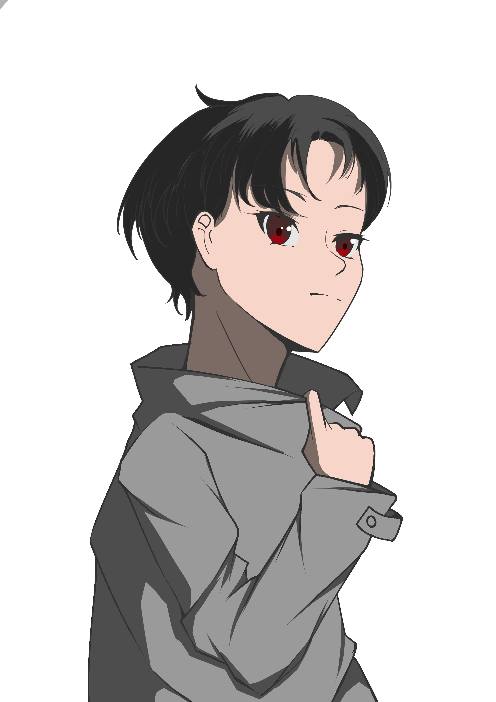
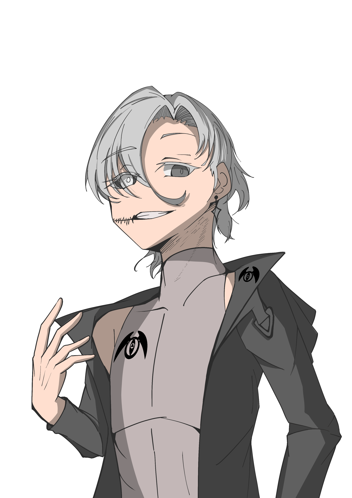
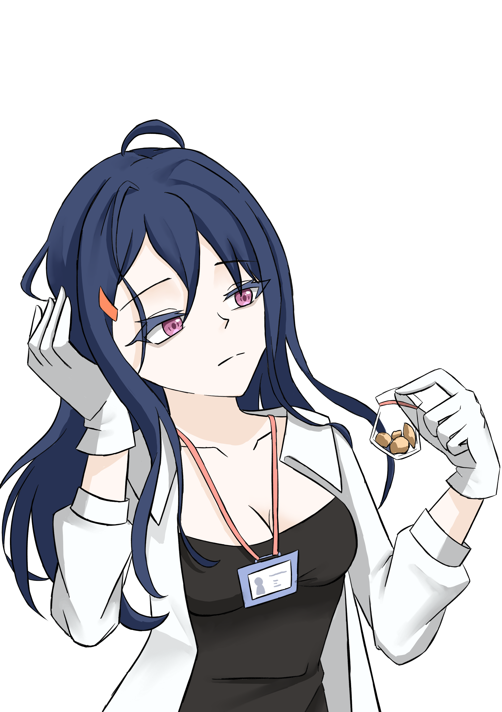
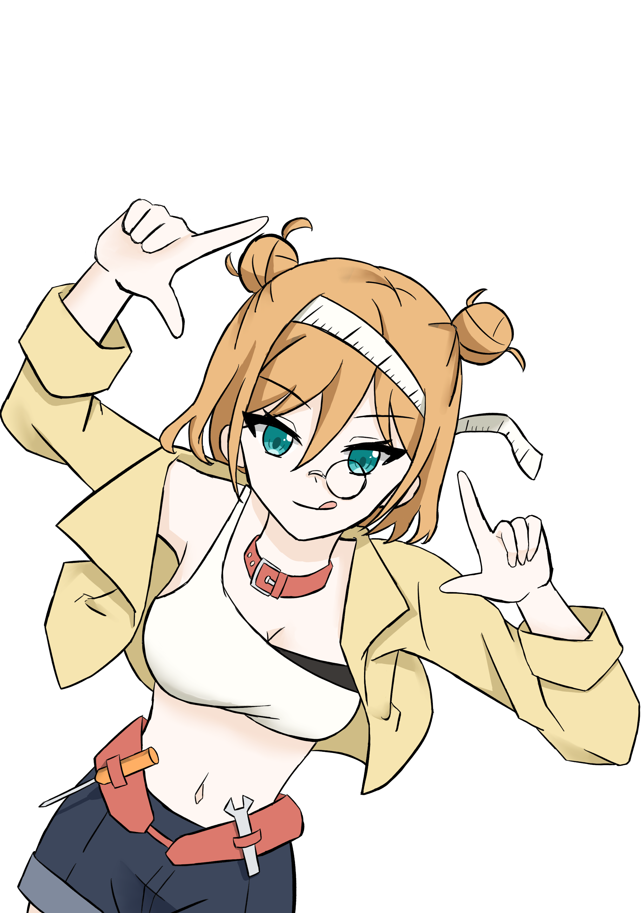

破除者(主角)
原先是一名普通的高中生，在一次遭到“異聞“襲擊的過程中，發現自己的青梅竹馬）是一名“異聞者“，能力為"解除異聞造成的影響"的"破除"，在與異聞戰鬥的過程中，青梅竹馬為了保護主角而受到異聞侵蝕，在彌留之際將能力託付給主角。兩人便雙雙昏迷。

有時我們必須深入一點
然而主角醒來後，大部分的記憶已由調研局消除，而成為調查員，而青梅竹馬也不知所蹤，與此同時，調研局內部也發生一起暴動，而調研局高層則打算利用主角找出引起暴動的叛徒，故事也在此展開。

博士
調研局的研究者，以100%的任務完成率出名，嘴上有一條明顯的裂痕，據說是受到裂嘴女攻擊所留下的影響，在各方面都有很強的實力。
眼見不一定為實
博士是由裂嘴女所收養的孤兒，與主角一樣在被消除記憶後成為調研局成員，卻在因緣際會下發現被收容的裂嘴女與自己的身世，並在注意到主角後發動暴亂，並利用異聞-篡奪者的能力干擾調研局的消除，使主角漸漸喚起真正的記憶
渡鴉
因異聞造成的災害成為孤兒，在調研局的收容與培訓下成為調查員，沉默寡言，擅長追蹤異聞的氣息或痕跡。
水面之下
他也作為調研局的秘密行動小組成員活動，目的是防止情報藉由調研局內部成員洩漏，具有直接處決洩密人員的權利。

黑蓮花
一名帶著陰鬱氣質的成熟女性，負責了調研局裡大大小小的情報管理，幹員訓練等，是調研局重要的司令塔，也是渡鴉的監護人

匠靈
年幼時曾靠自製道具與異聞怪物對抗。她的發明才華被拯救她的調查員注意到。進入調研局後，她的任務是為特務們打造裝備，幫助他們對抗異聞的各種能力。